Fall 2026
I implemented convolution with four loops and two loops. Both flip the kernel horizontally and vertically, use zero padding, and return an image with the same dimensions as the input. The four-loop version sums individual products; the two-loop version multiplies and sums a whole patch using NumPy.
box = np.ones((9, 9)) / 81
dx = np.array([[1, 0, -1]])
dy = np.array([[1], [0], [-1]])The box filter has 81 entries, each equal to 1/81, so it averages a 9 × 9 neighborhood and blurs the image. Dx measures changes from left to right, emphasizing vertical edges. Dy measures changes from top to bottom, emphasizing horizontal edges.
The box filter needs four pixels of zero padding on each side. Dx needs one column on the left and right; Dy needs one row above and below. Treating the outside as black darkens blurred borders and creates derivative responses at the image boundary.
I converted my 1280 × 720 photo to grayscale and divided by 255 to get floating-point values in [0, 1]. These are the two-loop results; both custom methods match SciPy numerically.
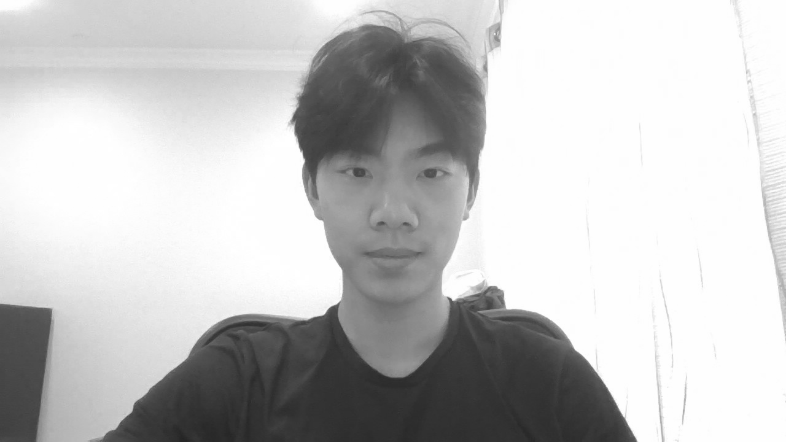
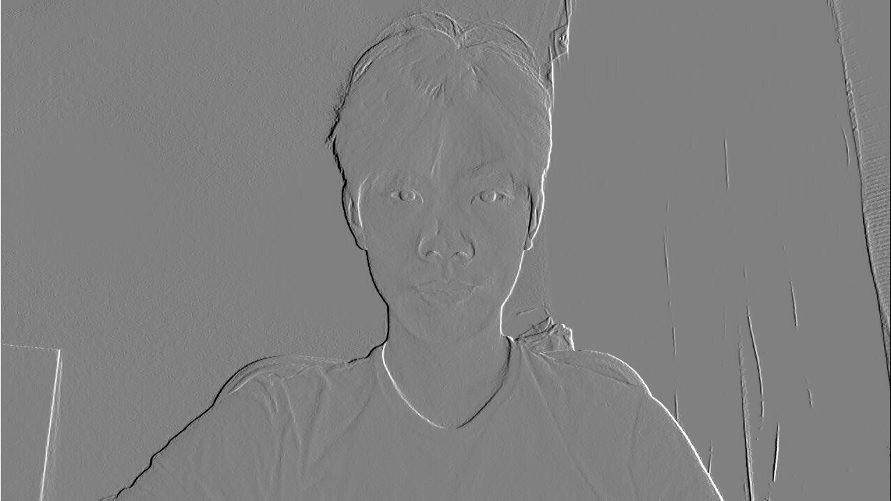
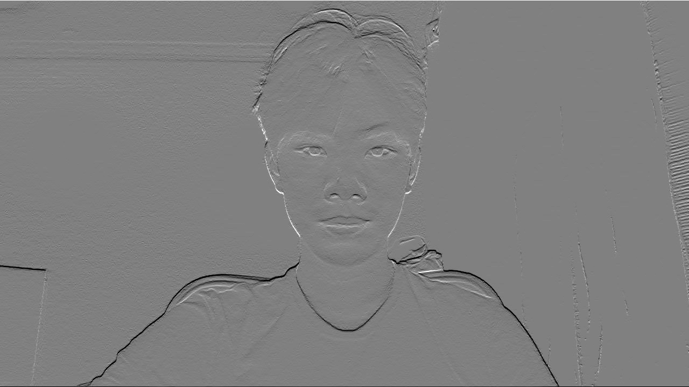
The derivative images display values from −0.25 (black) to 0.25 (white), with zero at middle gray. Values outside this range are clipped for display only.
I used scipy.signal.convolve2d with matching output size and padding:
reference = convolve2d(image, kernel, mode="same", boundary="fill", fillvalue=0)Times below are medians of three runs on the full-resolution photo, excluding file loading and saving. The original run used Python 3.11.3, NumPy 1.24.2, and SciPy 1.15.3 on Windows.
| Filter | Four loops | Two loops | SciPy |
|---|---|---|---|
| 9 × 9 box | 27.557 s | 8.523 s | 0.354 s |
| Dx | 2.144 s | 8.048 s | 0.019 s |
| Dy | 2.693 s | 5.013 s | 0.021 s |
Two loops were faster for the box filter because NumPy replaces 81 inner-loop operations per pixel. For the three-entry difference filters, the overhead of NumPy operations on each small patch made two loops slower. SciPy was fastest for all three filters.
def convolve_four_loops(image, kernel):
image = np.asarray(image, dtype=float)
kernel = np.asarray(kernel, dtype=float)
height, width = image.shape
kernel_height, kernel_width = kernel.shape
flipped = np.flip(kernel, axis=(0, 1))
pad_y = kernel_height // 2
pad_x = kernel_width // 2
padded = np.pad(image, ((pad_y, pad_y), (pad_x, pad_x)),
mode="constant", constant_values=0)
output = np.zeros((height, width), dtype=float)
for y in range(height):
for x in range(width):
total = 0
for kernel_y in range(kernel_height):
for kernel_x in range(kernel_width):
total += (padded[y + kernel_y, x + kernel_x]
* flipped[kernel_y, kernel_x])
output[y, x] = total
return outputThe setup is the same. I replace the four loops above with:
for y in range(height):
for x in range(width):
patch = padded[y:y + kernel_height, x:x + kernel_width]
output[y, x] = np.sum(patch * flipped)I convolved the grayscale cameraman image with Dx = [1, 0, −1] and its vertical counterpart Dy. The gradient magnitude is √(Gx2 + Gy2), and the binary edge image marks pixels with magnitude greater than 0.21.
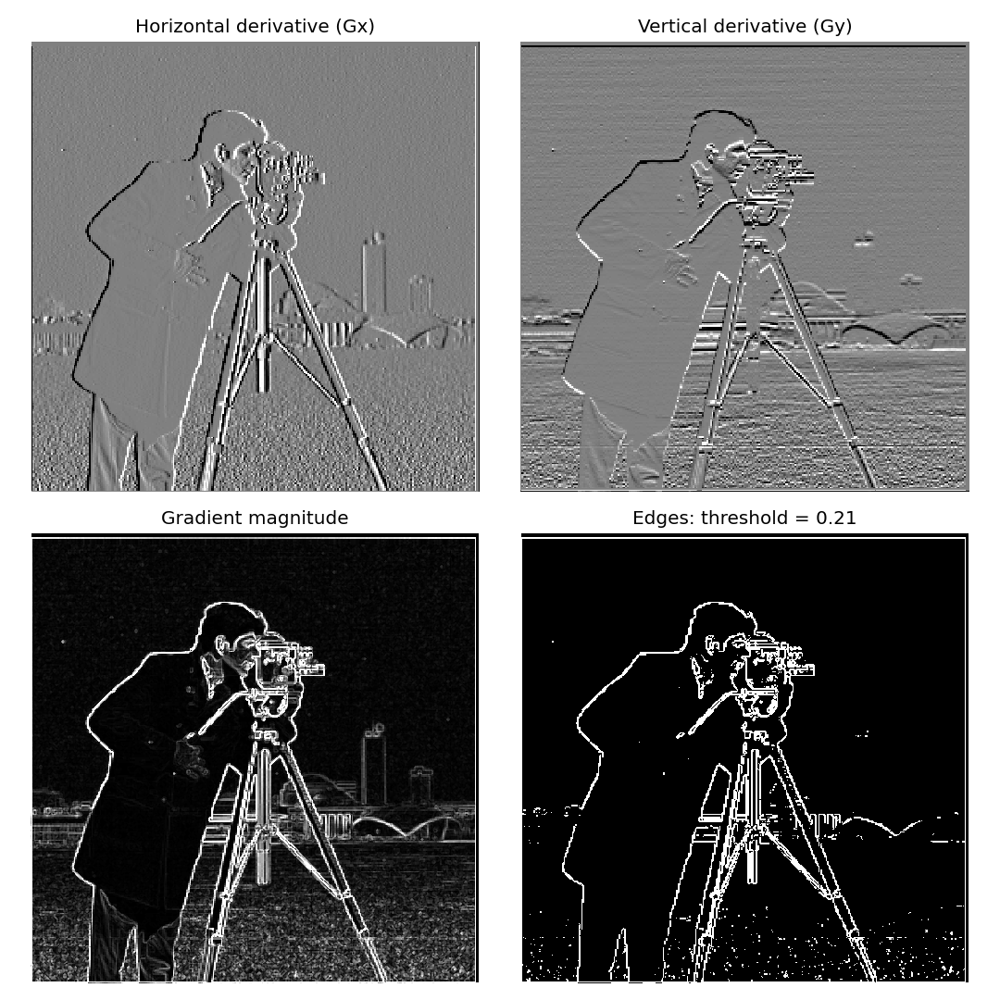
I chose 0.21 to suppress much of the grass texture while retaining the cameraman, camera, and tripod outlines. Lower thresholds retained more background clutter; higher thresholds broke weaker object boundaries. The bright outer border comes from zero padding.
I built a 9 × 9 Gaussian kernel with σ = 1.5 using cv2.getGaussianKernel and the outer product g @ g.T. First, I blurred the cameraman with this kernel, then applied the same finite difference filters, gradient magnitude, and thresholding as in Part 1.2.
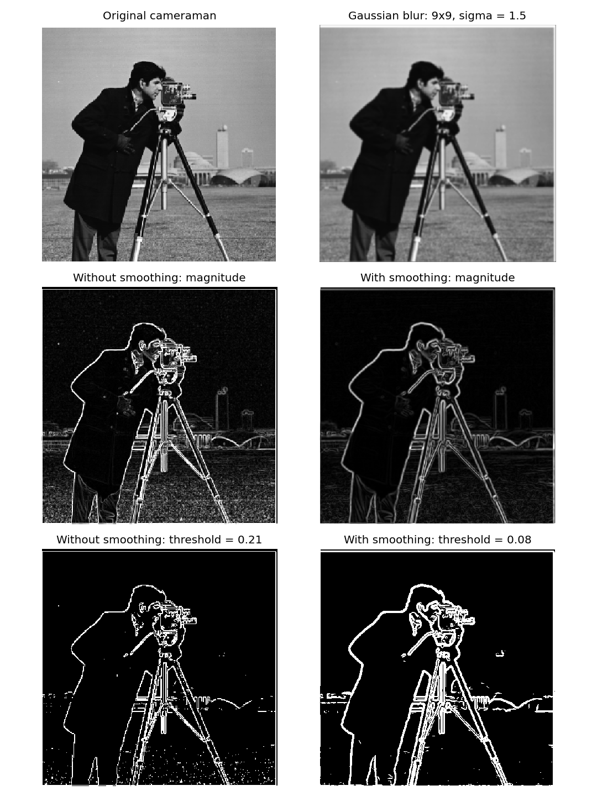
Smoothing reduces the fine grass texture and gives more continuous main outlines, but broadens the edges and loses some small camera details. I used a lower threshold of 0.08 after smoothing because the gradient responses are weaker. The binary images therefore compare separately chosen thresholds; the magnitude images show the smoothing effect on a shared scale.
I then convolved the Gaussian kernel itself with Dx and Dy to create the two DoG filters. I used mode="full" to keep the entire combined kernels, producing sizes 9 × 11 and 11 × 9.
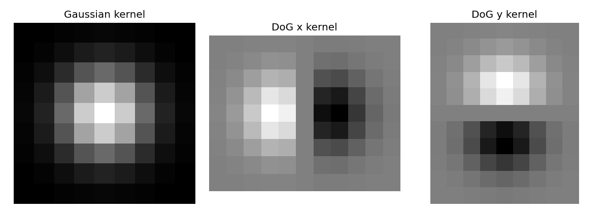
Convolution is associative: (I * G) * Dx = I * (G * Dx), and likewise for y. Applying each combined DoG filter to the original image should therefore produce the same derivatives as blurring first and differentiating afterward.
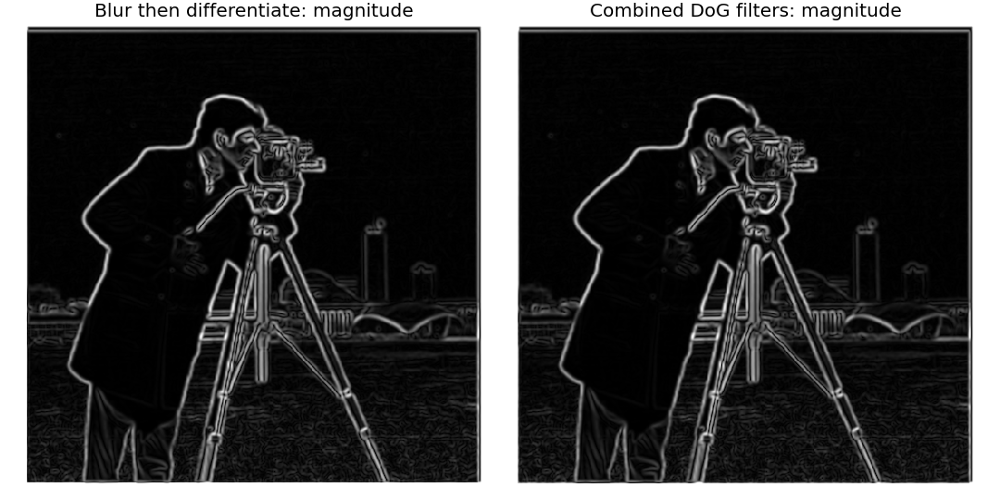
The x derivatives, y derivatives, and gradient magnitudes all passed np.allclose with rtol=0, atol=1e-12 on the image interior. I excluded the outermost row and column on each side because the first method crops the intermediate blurred image with mode="same", causing boundary differences. Both methods produce the same smoothed interior response, unlike the noisier unsmoothed finite differences in Part 1.2.
A Gaussian blur keeps low frequencies: broad, slowly varying image structure. Subtracting this blur from the input isolates high frequencies such as edges and fine texture. Unsharp masking adds a scaled copy of these details back to the input:
B = I * G, H = I − B, S = I + αH.
Combining the operations gives the sharpening kernel K = (1 + α)δ − αG, where δ is zero everywhere except for a 1 at its center. I apply K in one convolution per RGB channel, using symmetric boundary padding. The Gaussian is 9 × 9 with σ = 1.5, and I compare α = 0.5, 1.5, and 3. Results are clipped to [0, 1] only for display.
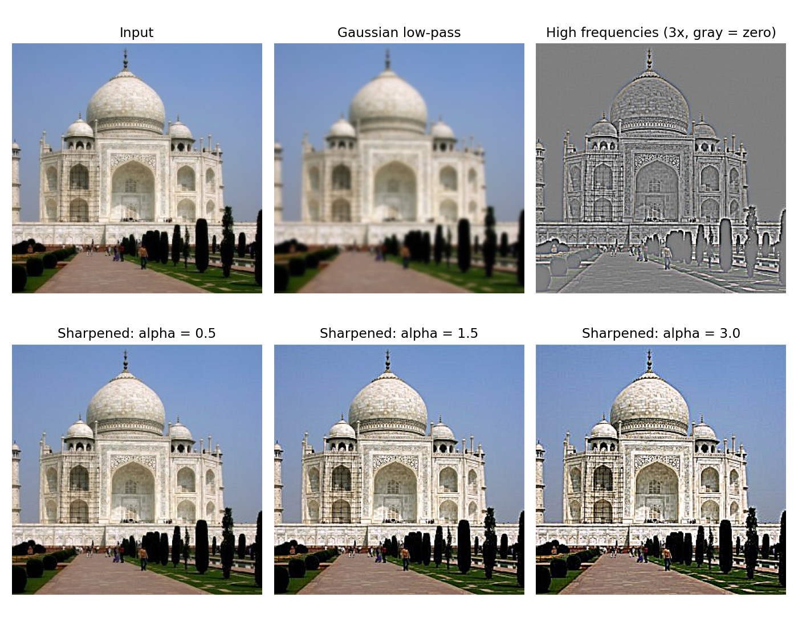
Sharpening increases contrast in the dome tiles, arch, and building outlines. An amount of 0.5 makes a subtle change; 1.5 makes details more distinct. At 3, the outlines become harsh and bright halos appear, especially where the building meets the sky.
I resized the Samoyed photo to 450 × 600 and deliberately blurred it with a 13 × 13 Gaussian, σ = 2, to create this input. The low-pass image below is an additional blur used to extract the sharpening details from that already-blurry input.
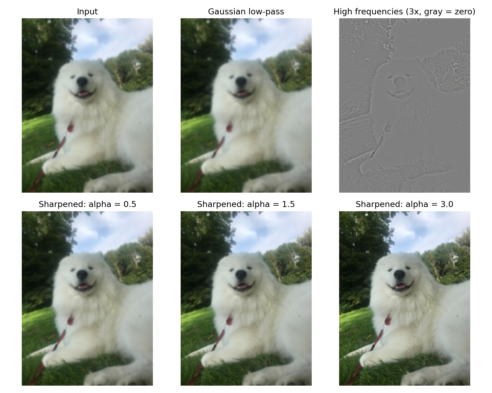
Increasing α strengthens the boundaries around the dog's eyes, nose, and fur, as well as the background foliage. The image appears less soft, but fine individual hairs remain blurred even at the largest sharpening amount.
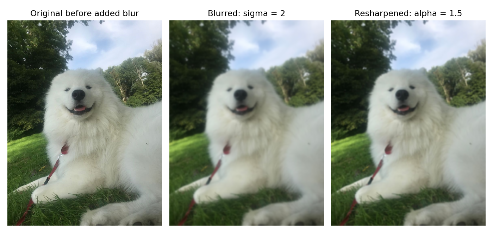
The resharpened image improves contrast around the face and coat compared with the blurred image, but does not recover the original fine fur and grass texture. Unsharp masking boosts the high-frequency information that remains; it does not undo the blur or reconstruct the lost detail.
Samoyed photo: Ruerd Kroon, Wikimedia Commons, CC BY-SA 4.0. Resized, blurred, and sharpened for this experiment; the modified Samoyed images and figures are also shared under CC BY-SA 4.0.
A hybrid combines the low frequencies of one image with the high frequencies of another: H = A * Glow + (B − B * Ghigh). Nearby, B's fine details are visible; farther away, those details become hard to resolve and A's broad structure becomes more apparent. All examples use grayscale so the effect comes from spatial detail.
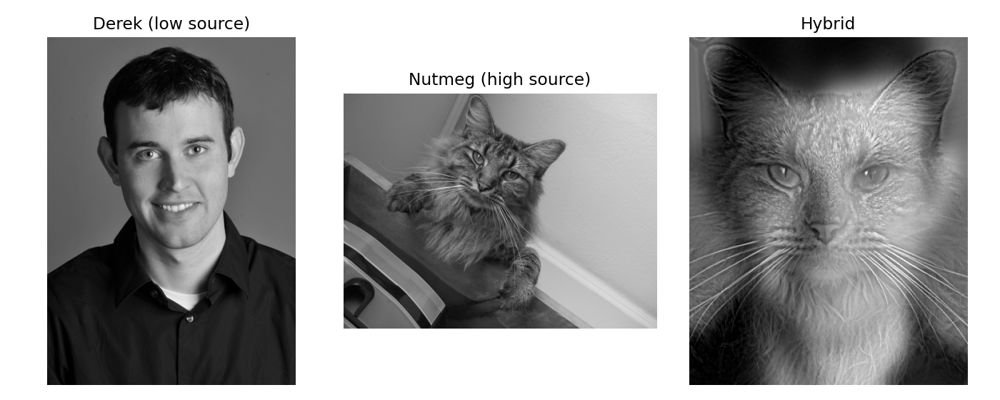
I used the starter's two-point alignment idea, implemented with OpenCV and saved eye coordinates. Translation, rotation, and uniform scaling place the eyes at the same locations in a 320 × 400 output crop. This keeps corresponding facial features together instead of producing two displaced faces. Reflection extends any sampled areas outside the source image.
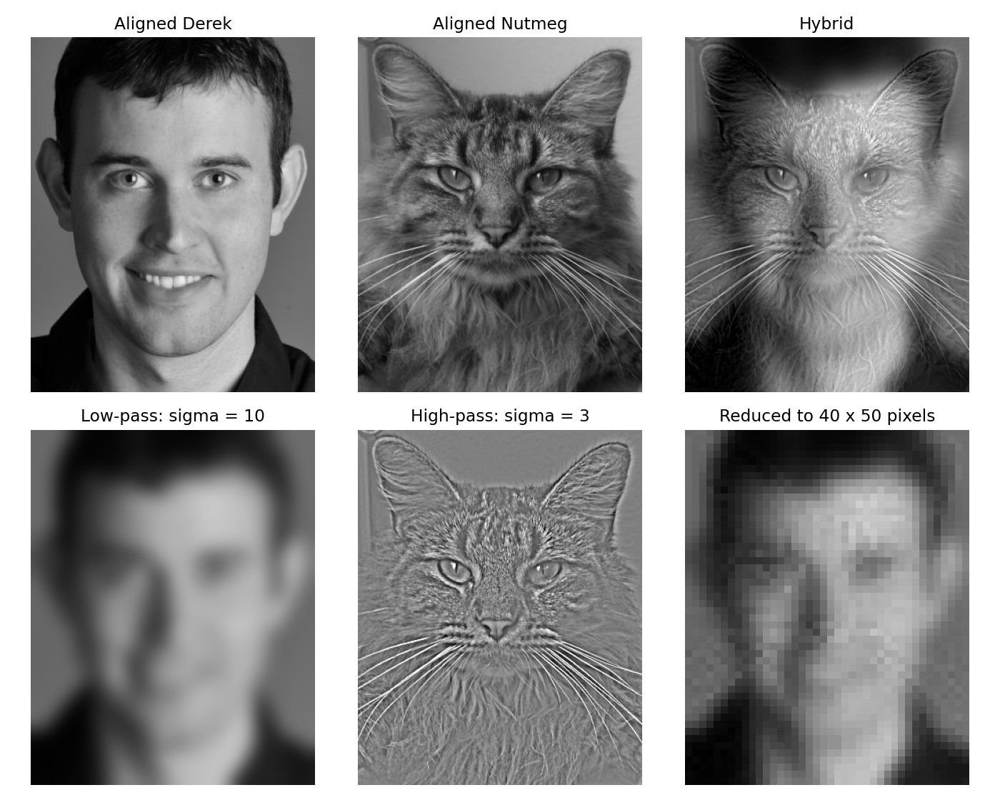
Cutoff choice: I tried low-pass σ values of 6, 10, and 16 and high-pass subtraction σ values of 1.5, 3, and 5. I chose 10 and 3: 6 leaves more competing Derek detail, while 16 softens his face too much; 1.5 gives a faint cat contribution, while 5 retains more of the cat's larger structures. The selected kernels are 61 × 61 and 19 × 19, extending three standard deviations from the center. Gaussian cutoffs are gradual; these σ values control the frequency separation rather than imposing a hard cutoff.
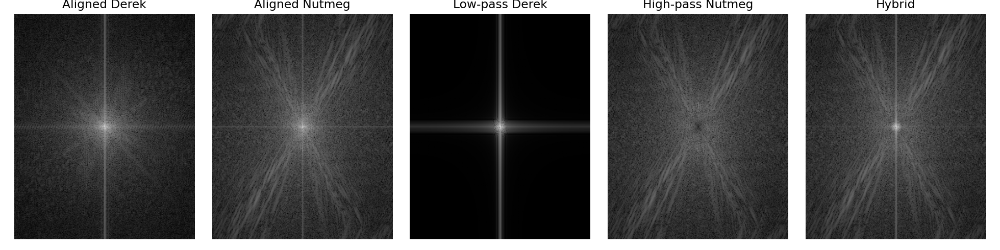
The center of each spectrum represents low frequencies; locations farther from the center represent faster spatial changes. Blurring concentrates Derek's spectrum near the center. Subtracting a blur suppresses Nutmeg's low frequencies while retaining its finer texture. The hybrid combines Derek's central low-frequency content with Nutmeg's broader high-frequency content.
The same hybrid displayed smaller makes Derek easier to see:
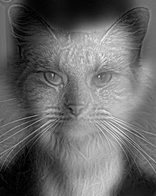
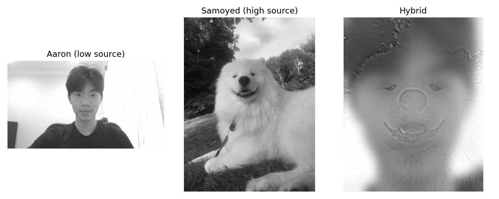
The dog's nose, mouth, and fur are apparent nearby; my face and hair form the broader structure. Different human and dog facial proportions leave some overlapping features even after aligning the eyes.
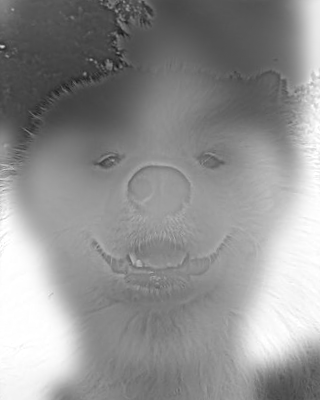
The Samoyed source and hybrid figure use the CC BY-SA 4.0 attribution given in Part 2.1; this hybrid is also shared under that license.
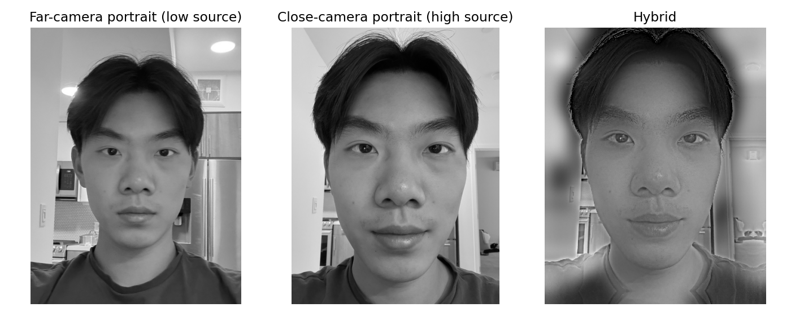
This change is subtler because both inputs show the same person. The close-camera portrait contributes the detailed eyes, eyebrows, and mouth; the other portrait contributes the broad lighting and face shape. Two-point alignment cannot fully correct perspective differences, so some hair and background contours remain doubled.
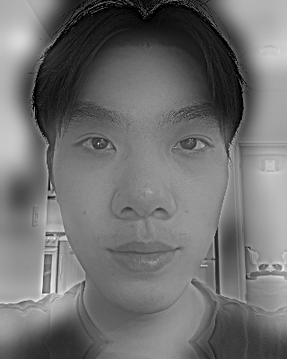